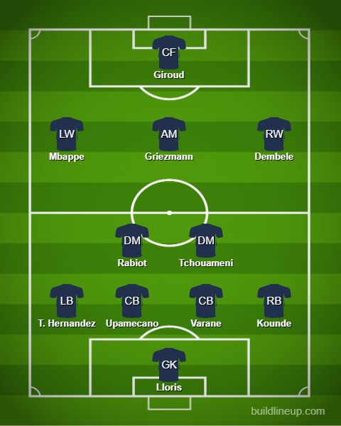

Day 15
France v Poland and England v Senegal
These results mean we have a mouth-watering clash between the holders and England. Will the holders roll through or will the English defense pen them back? We will know for sure on Saturday. Both games were great. One was all about Mbappe and the other was about moments that can happen if England can attack from the get-go.
Match 1
The Mbappe Show yet again. Record breaker Giroud. Poland is too pragmatic with one of the world’s best STs.
2 records were broken in this match. Giroud scored his goal which meant he is now France’s all-time men’s top scorer ahead of Thierry Henry. I don’t think many people understood his role in that 2018 France squad(I was one of them yes hello 👋). He was severely underrated and I owe him an apology. I wasn’t familiar with your game. He was really good and we almost had another goal of the tournament contender but sadly Szczesny was down injured so it wasn’t counted. His earliest chance was around the 28th minute but he miscued Dembele’s cross. Poland did have a chance 10 minutes later but Zielinski shot straight at Lloris and it was blocked by the defense later on. Giroud’s opener was made to look really easy. Mbappe slips him through and he managed to have great composure with the shot and beat the keeper. He may be slow but he is rather lethal, at least when it comes to France. Later on, it was the Mbappe show yet again. First, it was a counterattack that was taken at pace and Mbappe just cut inside and unleashed a powerful shot in the top left corner. His record was that he managed to surpass Pele by scoring the most goals in the WC. The so-called “debate” between Mbappe and Haaland. Yeah, that is long dead in the water. You are just seeing that now. Honestly, Mbappe is a really really great player barring his ego. The next one was another curler which was in the top right after a pass from Thuram. This was taken more quickly. Opens space up and bang. Poland managed to get a consolation goal at the end after VAR gave a penalty because of a handball by Upamecano. Lewa had his first attempt saved with his classic stutter run up but it had to be taken again because Lloris went away from his goal line. On the retake, he managed to score.
France

Poland
Match 2
England handles themselves well. Senegal doesn’t capitalize on early promise. England needs to be more imposing for the next game
The score may suggest it was no contest and with the way they took the goals yes it really wasn’t but one thing which can be taken as a positive was the fact that Senegal actually threatened by being aggressive from the start which is a drawback in the Southgate system and was the first ones to have a shot on target from Dia but Pickford had a strong hand out to deny him. England punished them with 2 well-worked team goals. The first one was from Henderson after Kane sent through Bellingham and he managed to cut it back for Henderson perfectly. Good experience youth combo. The second was a deadly finish from Kane. England broke on the counter, Belligham to Foden who found Kane and he managed to finish past Mendy. The third to seal the deal was from Saka. Foden managed to slip in behind easily and found Saka on the cut back who finished well. Senegal never had anything after that. If England can be as imposing as they were when they scored their goals from the get-go against France we have a match. Otherwise, I could see France dominate possession and happily just keep crossing the ball in for either Giroud or Mbappe